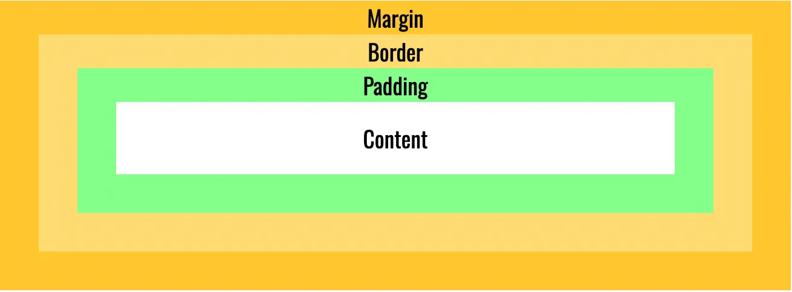
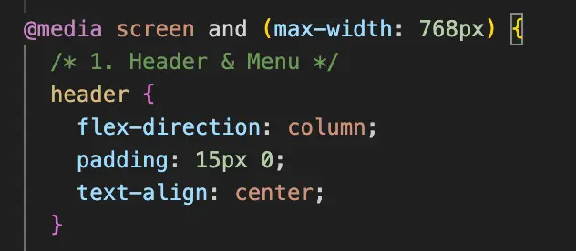

Min computer - projekt
I dette forløb har jeg lært at bygge en hjemmeside helt fra bunden. Jeg har brugt HTML til at opbygge selve indholdet og CSS Grid til at styre, hvor billeder og tekst skal stå, så de står pænt ved siden af hinanden. For at sikre, at siden også virker på en telefon, har jeg brugt Media Queries, som automatisk ændrer layoutet, når skærmen bliver mindre.
Læring
Jeg har lært at kombinere semantisk HTML med CSS Grid for at skabe et struktureret layout. Jeg har fået en grundlæggende forståelse for, hvordan man bruger en grid-container til at styre placeringen af sit indhold. En vigtig del af min læring har været brugen af semantiske tags som 'main', 'section' og 'article' for at opdele indholdet korrekt og logisk. Samtidig har jeg fået styr på box-modellen, så jeg kan kontrollere størrelsen på mine elementer med padding og margin, mens Grid-systemet sørger for den overordnede opstilling via gap.
Proces
Min proces startede i Figma, hvor jeg planlagde mit layout og mit grid-net. Da jeg begyndte at kode, opsatte jeg min grid-container med to kolonner for at få billedet og teksten til at stå ved siden af hinanden. Undervejs brugte jeg browserens Inspect-værktøj flittigt til at tjekke mine kasser. Det gjorde det nemt at se, om det var grid-indstillingerne eller box-modellens margin, der styrede afstandene, så jeg kunne rette layoutet til løbende.
Løsning
Den endelige løsning er et solidt og responsivt layout, hvor HTML og CSS arbejder sammen. Ved at bruge de semantiske tags som fundament og CSS Grid til selve opbygningen, har jeg skabt en side, der står præcis som i mit design. Løsningen er fleksibel, fordi jeg har brugt relative enheder som fr, hvilket betyder, at både box-modellens værdier og grid-kolonnerne tilpasser sig flydende efter skærmstørrelsen.
Media queries
For at gøre siden responsiv har jeg også arbejdet med Media Queries. Jeg har lært at bruge breakpoints til at ændre mit grid-layout, så det tilpasser sig forskellige skærmstørrelser. For eksempel har jeg ændret min grid-template-columns fra to kolonner på desktop til én kolonne på mobilen, så indholdet bliver læsbart og brugervenligt på alle enheder.
